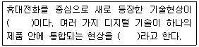
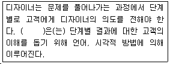
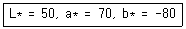

컬러리스트산업기사 (2015-03-08 기출문제)
1과목: 색채심리
1. 일반적인 색채의 연상으로 잘못 짝지어진 것은?
- 노랑 -정직, 영원
- 빨강 -정열, 분노
- 파랑 -이상, 냉정
- 초록 -휴식, 평화
(정답률: 97%)

2. 색채마케팅에 있어서 제품의 위치(Positioning)에 대한 설명으로 옳은 것은?
- 소비자들의 마음속에 차지하게 되는 제품의 위치
- 제품의 가격에 대한 위치
- 제품의 성능에 대한 위치
- 제품이 디자인과 색채에 대한 위치
(정답률: 74%)
3. 국제유행색위원회(International Commission for Fashion and Textile Colors)에 대한 설명으로 틀린 것은?
- 1963년에 설립되었다.
- 3년 후의 색채 방향을 분석하고 제안한다.
- S/S, F/W의 두 분기로 유행색을 예측 제안한다.
- 매년 6월과 12월에 인터컬러 회의를 개최한다.
(정답률: 90%)
4. 대상별 색채 선호 경향의 설명이 틀린 것은?
- 남성은 어두운 튼의 청색, 갈색, 회색 계열을 선호한다.
- 남성보다 여성은 다양한 색을 선호한다.
- 자동차의 색채 선호는 지역의 환경 및 빛의 강도, 기후, 생활패턴에 따라 다르다.
- 라틴계 민족은 한색계열을, 북극계 민족은 난색계열을 선호한다.
(정답률: 80%)
5. SD법(Semantic Differential Method)을 활용한 색채 이미지 조사법의 특징이 아닌 것은?
- 색채 감성의 객관적 척도이다.
- 단색체계에 대한 상대적인 비교 평가가 가능하다.
- 의미공간상에서 두 점간의 거리는 의미차이와 무관하다.
- 색채 기획이나 디자인 과정에서 이미지의 위치를 찾을 수있다.
(정답률: 75%)
6. 노랑이 장애물이나 위험물의 경고에 많이 사용되는 이유는 아닌 것은?
- 국제적으로 쉽게 이해된다.
- 명시도 높다.
- 대상에 대한 연상이 쉽다.
- 메시지 전달이 용이하다.
(정답률: 71%)
7. 색채선호에 대한설명 중틀린 것은?
- 색에 대한 일반적인 선호 경향과 특정 제품에 대한 선호색은 다르다.
- 일본의 경우 자동차에 대한 흰색의 선호 경향이 크다.
- 색에 대한 일반적인 선호 경향은 성별, 연령별에 따라 다른 특성을 보인다.
- 제품의 특성에 따라 선호되는 색채는 고정되어 있다.
(정답률: 88%)
8. 21세기 디지털 시대를 대표하는 색으로 선정된 것은?
- 노랑
- 빨강
- 청색
- 자주
(정답률: 80%)
9. 색채정보 수집에서 가장 많이 사용되는 방법은?
- 패널 조사법
- 현장 관찰법
- 실험 연구법
- 연구 조사법
(정답률: 38%)
10. 다음 중 색채의 공감각적인 측면을 활용한 사례로 가장 거리가 먼 것은?
- 바나나가 들어간 아이스크림의 노란색 포장지
- 오렌지 성분이 들어간 목욕용품의 주황색 포장지
- 장미향이 나는 향수의 분홍색 액체
- 자연보호를 위한 세제의 녹색 포장지
(정답률: 66%)
11. 다음 중 색채의 주관적 경험을 보여주는 것이 아닌 것은?
- 페흐너 효과
- 기억색
- 항상성
- 지역색
(정답률: 40%)
12. 색채심리를 이용하여 지각범위가 좁아진 노인을 위한 공간계획을 할때 가장고려되어야 할것은?
- 색상대비
- 명도대비
- 채도대비
- 보색대비
(정답률: 70%)
13. 다음 중 샌드위치 상점의 인테리어 컬러 선정 시 신선한 재료의 사용을 부각시키려 할 때 주조색으로 가장 적절한 색채는?
- 5YR 5/10
- 5G 5/10
- 5YR 8/2
- 5G 8/2
(정답률: 60%)
14. 다음 중 색채의 상징적 의미와 가장 관계가 깊은 것은?
- 파티의상
- 스포츠 음료
- 산업기기
- 국기
(정답률: 89%)
15. SD법(Semantic Differential Method)에 대한 설명이 틀린 것은?
- 색채 이미지에 관한 연구법이다.
- 심층 면접방법이다.
- 오스굿(Osgoods)이라는 심리학자에 의해 고안되었다.
- 조사 대상자의 주관적인 의미를 객관적으로 평가할 수 있게 한다.
(정답률: 69%)
16. 이미지의 중심이 되는 상징적 대표색을 의미하는 것으로, 숲을표현할 때그 속에는적색,청색,갈색 등이 다양하게 분포되어 있지만 대표 이미지로 초록을 정한 것을 무엇이라고 하는가?
- 기억색(memory color)
- 강조색(accent color)
- 분리색(separation color)
- 기준색(theme color)
(정답률: 71%)
17. 색채 시장조사의 자료수집 방법 중 현장관찰법의 설명으로 옳은 것은?
- 특정한 효과나 정확한 정보를 얻고자 할 때 색채실험을 하거나 실험집단과 통제집단의 비교를 통해 측정
- 조사의 신뢰도를 높이기 위해 소비자의 반응을 보거나 대화나 불만사항 등을 들음으로써 정보를 수집
- 신제품 출시 전 광고나 제품의 방향성을 수립하기 위해 표적 집단을 조사하는 방법
- 약 6.10명으로 구성된 소비자와의 지속적인 인터뷰를 통해 색선호도나 문제점 등을 조사
(정답률: 64%)
18. 향수의 용기 및 포장을 디자인하고자 한다. 향과 색채가 옳게 연결된 것은?
- musk향 : dull purple
- mint향 : dark blue
- camphor향 : light yellow
- ethereal향 : light red
(정답률: 70%)
19. 사람이 생활하는데 있어서 자연적이나 사회적으로 지속적인 영향을 주지 않는 것은?
- 풍토색
- 관용색
- 기호색
- 유행색
(정답률: 63%)
20. 색채가 주는 의미로 인해 상품외면의 색상이 선택된다. 일반적으로 가전제품에 사용되는 색상들이 무채색이 많은 이유로 타당한 것은?
- 무채색이 소비성을 자극하므로
- 가전제품이 가지는 제품기능에 대한 신뢰성과 세련됨을 적절히 표현할 수 있는 색상이므로
- 가전제품의 표면재질이 다른 색을 표현하기 어렵고 색상을 넣을 경우 기능에 장애가 오기 때문에
- 무채색이 대뇌에 쉽게 인지되기 때문에
(정답률: 88%)
2과목: 색채디자인
21. 디자인의 조형 요소 중 물체가 점유하는 공간은?
- 점
- 선
- 면
- 입체
(정답률: 73%)
22. 그린디자인(Green Design)의 원리에 대한 설명과 가장 거리가 먼 것은?
- 디자이너는 사용자의 건강에 피해를 주지 않도록 환경적 위험을 최소화한다.
- 서로 다른 종류의 재료에 의한 혼합재료를 사용한다.
- 재활용 부품과 재활용품이 아니 부품이 분리되기 쉽도록 한다.
- 에너지와 자원의 효율성을 높인다.
(정답률: 73%)
23. 근대건축과 디자인의 기본적인 조형원리에 바탕을 둔 사조로, 근본적인 전제는 기능과 미 또는 형태가 일치할 수 있다는 디자인 사조는?
- 아르누보
- 모더니즘
- 기능주의
- 기계미학
(정답률: 70%)
24. 새로운 예술로 의미하는 미술양식으로 1890년부터 1910년 까지의 장식예술 및 조형예술로서 유연하고 동적인 선과 장식적인 형태가 특징인 것은?
- 다다이즘
- 아르누보
- 아르데코
- 데스틸
(정답률: 58%)
25. 여러 세대를 거치면서 형태가 세련되어지고 사용법도 개선되어 나타나는 인간중심의 디자인을 나타내는 디자인 요건은?
- 친자연성
- 경제성
- 합리성
- 문화성
(정답률: 55%)
26. 색채계획 및 디자인 프로세스에서 계획된 색채로 착색한 모형이나 시뮬레이션을 통해 의뢰인과 검토하는 과정은?
- 디자이닝
- 실시계획
- 모델링
- 에디팅
(정답률: 80%)
27. 실내 디자인(Interior Design)에 대한 설명 중 옳은 것은?
- 건축의 외장이 완성되기 이전에 실내 디자인을 반드시 끝낸다.
- 실용적인 측면에 앞서 아름다움에 중점을 두어야 한다.
- 생활 주거 환경의 모든 요소로 영역이 확대되고 있다.
- 자동차는 실내디자인과 별개로 무관하다.
(정답률: 78%)
28. 포스트모던 양식의 특징이 아닌 것은?
- 절충주의(eclecticism)
- 맥락주의(contextualism)
- 은유(metaphor)와 상징(symbolism)
- 간결성(simplicity)
(정답률: 32%)
29. 오늘날 해당 기업체들은 이미지를 부각시켜 성장효과를 얻기 위하여 기업색을 도입한다. 이러한 기업의 이미지 통합 계획은?
- B.I.P
- C.I.P
- R.O.I
- M&A
(정답률: 81%)
30. 보기의 ( )에 공통적으로 들어갈 내용은?

- 상방향 커뮤니케이션(two-way communication)
- 인터렉션 디자인(interaction design)
- 디지털 컨버전스(digital convergence)
- 위지윅(WYSIWYG)
(정답률: 72%)
31. 1851년 런던에서 개최된 만국박람회는 만국박람회의 효시로 현대디자인의 발전에까지 영향을 미쳤다. 이와 관계가 없는 것은?
- 죠셉 펙스톤(joseph Paxton)
- 신조형주의(de Stijl)
- 수정궁(Crystal Palace)
- 조립식 공법(Prefabrication)
(정답률: 36%)
32. 다음 중 유니버설 디자인의 7원칙과 관련이 없는 것은?
- 대상에 대한 공평성
- 오류에 대한 포용력
- 복잡하고 감각적인 사용
- 적은 물리적 노력
(정답률: 71%)
33. 다음 중 디자인 사조와 색채사용의 연결이 틀린 것은?
- 옵아트 -원색을 탈피한 엷은 색조
- 포스트모더니즘 -무채색에 가까운 파스텔 색조, 살구색, 올리브 그린
- 아르데코 -녹색, 검정, 회색의 배색
- 데스틸-공간적 질서속에 색면의 위치와배분의 중요
(정답률: 47%)
34. 패션색채계획에 사용되는 '회색'에 대한 설명으로 거리가 먼 것은?
- 주황색과 핑크색 등의 악센트 컬러를 사용한다.
- 세련된 느낌과 함께 중간적인 성격을 나타낸다.
- 고급스러움과 세련된 권위를 나타낼 수 있어 비즈니스 패션에 적합하다.
- 정신적인 피로를 풀어주는 색이며, 어두운 피부를 가진 사람에게 잘 어울린다.
(정답률: 45%)
35. 굿 디자인(Good Design)의 조건이 아닌 것은?
- 심미성
- 차별성
- 합목적성
- 경제성
(정답률: 65%)
36. 주위를 환기시킬 때, 단조로움을 덜거나 규칙성을 깨뜨릴 때, 관심의 초점을 만들거나 움직이는 효과와 흥분을 만들 때 이용하면 효과적인 디자인 요소는?
- 강조
- 반복
- 리듬
- 대비
(정답률: 64%)
37. 보기의 ( )에 적합한 디자인 용어는?

- 프로젝트 관리(Project Management)
- 내비게이션(Navigation)
- 브레인스토밍(Brainstorming)
- 프레젠테이션(Presentation)
(정답률: 78%)
38. 산업디자인의 분류 중 2차원 디자인이 아닌 것은?
- 편집디자인
- 일러스트레이션
- P.O.P. 디자인
- 지도 및 통계 도표
(정답률: 56%)
39. 패션디자인의 색채계획을 기획, 디자인, 상품화의 3단계로 분류할 때, 다음 중 디자인실무단계와 관련이 없는 것은?
- 패션테마와 패션 색채 이미지 설정 및 맵 제작
- 시즌테마와 유행색 분석 및 추출
- 소재계획의 결정
- 아이템별 패션색채 전개 후 라인구성
(정답률: 59%)
40. 일본 디자인의 대표적인 특징이 아닌 것은?
- 축소주의
- 간결성
- 장식성
- 기능성
(정답률: 80%)
3과목: 섹채관리
41. 간접조명에 대한 설명으로 옳은 것은?
- 반사갓을 사용하여 광원의 빛을 모아 비추는 방식
- 반투명의 유리나 플라스틱을 사용하여 광원 빛의 60 . 90%가 대상체에 직접 조사되고 나머지가 천정이나 벽에서 반사되어 조사되는 방식
- 반투명의 유리나 플라스틱을 사용하여 광원 빛의 10 . 40% 가 대상체에 직접 조사되고 나머지가 천정이나 벽에서 반사되어 조사되는 방식
- 광원의 빛을 대부분 천정이나 벽에 부딪혀 확산된 반사광으로 비추는 방식
(정답률: 88%)
42. RGB 색체계에 대한 설명 중 틀린 것은?
- 가법혼합을 기반으로 하는 색체계
- 입력 디바이스의 색체계
- 출력 디바이스의 색체계
- 디바이스 독립적 표준색체계
(정답률: 34%)
43. 1931년 CIERGB 색체계의 음수(-)의 문제점을 해결하기 위해 개발된 색체계는?
- CIE LAB
- CIE XYZ
- CIE LUV
- CIE u,v
(정답률: 41%)
44. 디지털색채에 대한설명 중옳은 것은?
- 디지털 색채의 기본색은 red, green, blue 이다.
- 디지털 색채 영상을 구성하는 최소 단위는 바이트 (Byte)이다.
- 해상도는 모니터의 크기가 커질수록 선명도가 높아진다.
- 24비트로 된 한 화소가 나타낼 수 있는 색의 종류는 1572864(=256*256*24) 이다.
(정답률: 78%)
45. 다음용어의 설명중 틀린것은?
- 암순응 -약 0.03cd m -2 정도 이하인 휘도의 자극에 대한 휘도순응
- 아이소메리즘 -광원과 관계없이 색이 같아 보이는 것
- 메타메리즘 -다른 두색이 어떤 조명 아래에서는 같은 색으로 보이는 현상
- 푸르킨예 현상 -어두운 곳에서 파랑은 어둡게 보이고 빨강은 밝게 보이는 현상
(정답률: 61%)
46. 모니터의 색온도에 관한 설명이 틀린 것은?
- 색온도가 높아진에 따라 빨강으로부터 주황, 노랑, 흰색, 하늘색, 청색의 순으로 변한다.
- 9300K로 설정된 모니터의 화면은 청색조를 띄게 된다.
- 모니터의 색온도는 6500K와 9300K 외에 임의로 설정할 수도 있다.
- 자연에 가까운 색을 구현하기 위해서는 색온도를 9300K로 설정하는 것이 좋다.
(정답률: 70%)
47. 측색기사용 시정확한 색채측정을 위해교정에 이용하는 것은?
- 북창주광
- 표준관측자
- 그레이 스케일
- 백색교정판
(정답률: 80%)
48. 색채 측정 결과에 반드시 첨부해야 하는 사항이 아닌것은?
- 색채 측정 방식(geometry)
- 표준광의 종류(Standard illumination)
- 표준관측자(Standard observer)
- 관측실의 온도(Temperature of test room)
(정답률: 77%)
49. CCM이란 무슨 뜻인가?
- 색좌표 중의 하나
- 컴퓨터 자동배색
- 컴퓨터 색채 관리
- 안료품질관리
(정답률: 80%)
50. 색료의 호환성과 통용성을 확보하기 위한 색료표시 기준은?
- 연색지수
- 색변이지수
- 컬러인덱스
- 컬러 어피어런스
(정답률: 71%)
51. 색채를 색채계로 측정하는 일차적인 이유로 옳은 것은?
- 사람의 눈과 유사한 기계를 만들기 위해
- 색채의 객관적인 규명을 위해
- 색표의 오염을 방지하기 위해
- 색채의 느낌을 파악하기 위해
(정답률: 94%)
52. 색료에 대한 분류로서 옳은 것은?
- 탄소가 포함된 안료는 유기안료, 포함되지 않은 안료는 무기 안료이다.
- 염료는 플라스틱이나 페인트의 착색에, 안료는 직물이나 피혁 등의 착색에 쓰인다.
- 산화철, 목탄, 산화망간 등은 무기염료이다.
- 인디고는 가장 오래된 천연안료이고, 모베인은 최초의 인공안료이다.
(정답률: 84%)
53. 다음 중 옅은 파란색을 띠는 기체는?
- 네온
- 헬륨
- 아르곤
- 나트륨
(정답률: 64%)
54. CIE 표준광원에 대한 정의가 올바른 것은?
- A : 2856K 백열광
- B : 4513K 임의광
- C : 6500K 직사광
- D : 3000K 시료광
(정답률: 54%)
55. 다음은 L*a*b*색표계를 이용한 색채측정결과이다. 어떤 색에 가까운가?

- 녹색
- 보라
- 빨강
- 노랑
(정답률: 56%)
56. 프리즘을 사용한 빛 스펙트럼 실험에 의해 광학의 기초 측색학을 만든 사람은?
- 오스트발트
- 뉴턴
- 다빈치
- 헤링
(정답률: 79%)
57. 표준광 A의 색온도는?
- 6774K
- 6504K
- 4874K
- 2856K
(정답률: 62%)
58. 컬러장치에서 발색 가능한 범위를 Yxy체계를 이용하여 표현한 것은?
- Color Range
- Color Matching
- Color Gamut
- Color Locus
(정답률: 38%)
59. KS의 색채 품질관리 규정에 의한 백색도에 대한 설명으로 틀린 것은?
- 백색도는 종이 펄프의 밝기를 측정하기 위한 것이다.
- 백색도는 측정 유효 범위가 있다.
- 이상적인 백색도는 100으로 하고, 백색에서 멀어짐에 따라 백색도의 수치가 낮아진다.
- 백색도(CIE)는 D65광원에서 정의되고 있다.
(정답률: 52%)
60. 조명디자인에 있어서 광원에 의한 눈부심을 나타내는 용어는?
- 칸델라
- 룩스
- 글레어
- 스펙트럼
(정답률: 44%)
4과목: 색채지각의이해
61. 다음중 빛에대한 설명으로틀린 것은?
- 장파장의 빛은 굴절률이 크고, 단파장의 빛은 굴절률이 작다.
- 물체색은 물체의 표면에서 빛이 반사되어 나타난 색이다.
- 단색광을 동일한 비율로 50% 정도만을 흡수하는 경우 물체는 중간 밝기의 회색을 띠게 된다.
- 빛이 물체에 닿았을 때 가시광선의 파장이 분해되어 반사, 흡수, 투과의 현상이 선택적으로 일어난다.
(정답률: 52%)
62. 다음 중 푸르킨예 현상이 발생하는 박명시의 최대시감도에 해당하는 파장의 범위는?
- 577nm ~ 650nm
- 507nm ~ 555nm
- 455nm ~ 555nm
- 300nm ~ 450nm
(정답률: 54%)
63. 강약감, 즉 강한 느낌과 약한 느낌에 주된 영향을 미치는 색의 속성은?
- 채도
- 명도
- 색상
- 보색
(정답률: 57%)
64. 심리적으로 가장 흥분감을 주는 색은?
- 고채도의 빨강
- 고채도의 파랑
- 저채도의 노랑
- 저채도의 보라
(정답률: 86%)
65. 빛의특성에 대한설명 중옳은 것은?
- 아지랑이, 별의 반짝임 등은 빛의 굴절로 설명된다.
- 빛의 굴절은 파장이 클수록 많이 일어난다.
- 카메라 렌즈는 빛의 반사로 인해 상이 맺힌다.
- 진주, 오팔의 보석색은 빛의 흡수로 설명된다.
(정답률: 50%)
66. 색채 지각 효과에 대한 설명이 옳은 것은?
- 베졸트 브뤼케 현상 : 빛의 강도가 변화하면 색광의 색상이 다르게 보인다.
- 허먼 그리드 : 잔상색이 일정한 규칙 없이 줄무늬 방향에 따라 변화한다.
- 맥콜로 효과 : 검정 사각형 사이로 백색 띠가 교차하는 부분에 회색잔상이 보인다.
- 리프만 효과 : 색의 채도가 높아질수록 색이 달라 보이는 현상이다.
(정답률: 50%)
67. 혼색에 관한 설명으로 틀린 것은?
- 중간혼색은 눈의 망막에서 일어나는 혼합이다.
- 회전혼색은 계시혼합의 원리에 의해 색이 혼합되어 보이는 것이다.
- 감법혼색의 3원색필터를 모두 겹치는 백색으로 인식된다.
- 모든 색을 만들 수 있는 가장 기본적인 1차색을 원색이라고 한다.
(정답률: 67%)
68. 보색대비 시 지각되는 현상은?
- 명도가 낮아 보인다.
- 명도가 높아 보인다.
- 채도가 낮아 보인다.
- 채도가 높아 보인다.
(정답률: 65%)
69. 색의 차이에 의해 대상이 갖는 정보의 차이를 구분하여 전달하는 성질을 나타내는 용어는?
- 유목성
- 식별성
- 시인성
- 항상성
(정답률: 75%)
70. 색채지각에 대한 설명이 옳은 것은?
- 보색이 인접할 때 채도가 높게 보이는 현상을 동화라고 한다.
- 인접한 색의 영향으로 인접색에 가깝게 보이는 것을 대비라 한다.
- 원자극을 제거한 후에 나타나는 시각의 상을 잔상이라 한다.
- 혼합하여 무채색이 되는 두 색은 원색관계에 있다.
(정답률: 91%)
71. 다음 중몸집이 가장작아 보이는색은?
- 저명도의 난색
- 저명도의 한색
- 고명도의 난색
- 고명도의 한색
(정답률: 55%)
72. 인접한 두 색간의 명시성이 가장 큰 경우는?
- 두 영역의면적 차이가클 때
- 두 영역의채도 차이가클 때
- 두영역의 색상차이가 클때
- 두영역의 명도차이가 클때
(정답률: 48%)
73. 색채지각에 대한 설명 중 옳은 것은?
- 간상체는 어두운 곳에서 주로 기능한다.
- 간상체는 유채색을 지각할 수 있다.
- 추상체는 망막 주변부에 고르게 분포한다.
- 간상체는 광량이 풍부한 경우에 활동하며 해상도가 뛰어나다.
(정답률: 66%)
74. 명도는 동일하고 색상이 다른 두 색의 색상대비 효과를 증가시키는 방법은?
- 채도를 낮춘다.
- 조도를 낮춘다.
- 채도를 높인다.
- 조명을 높인다.
(정답률: 82%)
75. 눈의 구조에서 추상체와 간상체가 모두 분포하지 않아 상을 볼수 없는부위는?
- 홍채
- 맹점
- 유리체
- 중심와
(정답률: 50%)
76. 보색관계에 있는 두 가지 색물감을 혼합했을 때 나타나는 색은?
- 검정에 가까운 색
- 흰색
- 순색
- 원색
(정답률: 83%)
77. 다음 중같은 크기일때 가장커 보이는색은?
- 빨강
- 보라
- 노랑
- 파랑
(정답률: 64%)
78. 순색의 물감에 검정을 섞을 때 나타나는 현상과 거리가 먼 것은?
- 탁해진다.
- 무겁게 느껴진다.
- 채도가 높아진다.
- 명도가 낮아진다.
(정답률: 84%)
79. 비누 거품이나 수면에 뜬 기름에서 무지개 같은 색이 보이는 것은?
- 표면색
- 형광색
- 경영색
- 간섭색
(정답률: 75%)
80. 가법혼색에 대한 설명으로 틀린 것은?
- 모든 색을 동등한 양으로 혼합하면 검정이 된다.
- 색광의 혼합으로 3원색은 빨강(Red), 초록(Green), 파랑(Blue)이다.
- 혼합할수록 색광의 에너지가 가산되어 원래의 색보다 명도가 높아진다.
- 컬러인쇄의 색분해에 의한 네거티브필름의 제조 및 무대조명에 활용된다.
(정답률: 74%)
5과목: 색채체계의이해
81. 다음 중 색채의 지각적 특성에 대한 설명이 틀린 것은?
- 두 개 이상의 색이 서로 영향을 주고 받음으로써 일어나는 상대적인 차이를 색채대비라고 한다.
- 가까이에 있는 둘 이상의 색을 동시에 볼 때 일어나는 색채대비를 계시대비라고 한다.
- 동화효과는 어떤 색이 달느 색에 둘러싸여 있을 때 주변색과 닮아 보이는 현상이다.
- 빛의 자극이 없어진 후에도 계속 남아 있는 시자극을 잔상이라 한다.
(정답률: 89%)
82. S4⑤0 -B30G에 대한 설명으로 옳은 것은?
- 백색도 40%, 흑색도 50%, 30%의 녹색도를 지닌 파란색
- 흑색도 40%, 순색도 50%, 30%의 녹색도를 지닌 파란색
- 순색도 40%, 흑색도 50%, 30%의 파란색도를 지닌 녹색
- 흑색도 40%, 순색도 50%, 30%의 파란색도를 지닌 녹색
(정답률: 60%)
83. 오스트발트 색상환에 대한 설명 중 틀린 것은?
- 헤링의 4원색을 기초로 한다.
- Y, UB, R, SG가 기본 색상이다.
- 색상번호 2의 보색은 색상번호 14이다.
- 최종적으로 100가지의 색상을 사용한다.
(정답률: 50%)
84. CIE 색체계에 대한 설명으로 틀린 것은?
- 색광을 표시하는 색체계이다.
- X, Y, Z 자극값으로 나타내는 색체계이다.
- 맥스웰의 R,G,B 표색계에서 기원한다.
- 감법혼색의 원리에 근거한다.
(정답률: 68%)
85. 다음 중 색의 3속성에 의한 먼셀 색체계의 설명으로 틀린것은?
- R, Y, G, B, P를 기본색상으로 한다.
- 명도의 번호가 클수록 명도가 높고, 작을수록 명도가 낮다.
- 색상별 채도의 단계는 차이가 있다.
- 무채색의 밝고 어두운 축을 gray scale라고 하며, 약자인 G로 표기한다.
(정답률: 69%)
86. 르네상스의 회화기법인 키아로스쿠로(Chiaroscuro)에 사용된 배색효과로 가장 적합한 것은?
- 토널 배색
- 선명한 톤의 도미넌트 배색
- 명도의 그라데이션 배색
- 까마이외 배색
(정답률: 34%)
87. 혼색계와 현색계의 설명 중에서 틀린 것은?
- 혼색계는 색을 표시한다.
- 현색계는 색채를 표시한다.
- 혼색계는 특정착색물체를 표시한다.
- 현색계는 물체의 색채를 표시한다.
(정답률: 73%)
88. 오스트발트 색채조화론에서 백색량, 흑색량, 순색량이 같은 색끼리의 조화를 무엇이라 하는가?
- 등백계열의 조화
- 등가색환 조화
- 보색 마름모꼴 조화
- 다색조화
(정답률: 70%)
89. 색채이론에 대한 설명 중 틀린 것은?
- 뉴턴은 빛을 분광하여 물리적인 요소로 색을 연구 하였다.
- 먼셀은 정량적인 바탕 위에 색채를 시각적으로 표준화 하였다.
- 오스트발트는 원뿔을 두 개 합친 색입체를 발표하였다.
- 헤링은 빨강, 노랑, 파랑으로 가법혼색을 설명하였다.
(정답률: 74%)
90. 먼셀의 색입체를 267블럭으로 구분하며, 인접된 색상에 수식어를 붙여 호칭하는 색명법은?
- 관용색명
- KSA0011
- 기억색명
- ISCC-NIST 일반색명
(정답률: 52%)
91. 다음 중 일반적인 물체색으로 보여지는 검정에 대한 설명으로 옳은 것은?
- 오스트발트 색체계 : pp
- L*a*b* 색체계 : L*값이 30
- Munsell 색체계 : N값이 9
- NCS 색체계 : ⑤00-N
(정답률: 44%)
92. NCS 색체계에 대한 설명으로 옳은 것은?
- 일본 색채연구소의 연구진에 의하여 제작된 것이다.
- 영, 헬름흘츠의 3원색을 따른다.
- 색상, 백색량, 흑색량의 순으로 표시한다.
- 색상과 늬앙스 개념으로 정리되어 있다.
(정답률: 48%)
93. 먼셀 색상환의 기본 구성 요소가 아닌 것은?
- 색상(H)
- 명도(V)
- 채도(C)
- 암도(D)
(정답률: 90%)
94. 색의 표준화를 위해 제시한 색채체계의 기본 색상과 국가의 연결이 옳은 것은?
- 먼셀 색체계-R, Y,B, G,P-영국
- 오스트발트 색체계-R, Y,G, B,P-독일
- NCS색체계 -Y,R, B,G-스웨덴
- P.C.C.S 색체계 -R, Y, B -일본
(정답률: 61%)
95. 다음 중 측색기로 색을 측정하여 반사되는 빛의 파장영역에 따라 색의 특성을 판별하는 색체계는?
- CIELAB
- MUNSELL
- NCS
- DIN
(정답률: 75%)
96. 다음 중 오스트발트 색체계의 등순 계열에 관한 설명으로 옳은 것은?
- 등색상 삼각형에서 백색량이 모두 같은 색의 계열
- 등색상 삼각형에서 흑색량이 모두 같은 색의 계열
- 등색상 삼각형에서 수직축에 평행한 직선 위의 색
- 등색상 삼각형으로 무채색 축을 중심으로 백색량과 흑색량이 같은 28개의 등가색상환 계열
(정답률: 57%)
97. 한국의 전통색에 대한 설명으로 틀린 것은?
- 한국 전통색은 음양오행적 우주질서에 따라 구성되었다.
- 오방색의 배합에 의해 만들어진 오간색은 녹색, 자색 홍색, 벽색, 유황색이다.
- 조선시대의 선비들이 흰색을 즐겨 입었기 때문에 백의의 민족으로 불리기도 하였다.
- 전통적인 색동의 색채는 흑색을 중심으로 적, 청, 황, 백을 배합한다.
(정답률: 50%)
98. 잡지표지로서 시각적인 효과를 위해 노란색 배경에 보라색을 포인트로 사용하여 디자인하였다. 이 때 배색 방법 중 노란색이 속하는 것은?
- 조화색
- 주조색
- 보조색
- 강조색
(정답률: 75%)
99. 다음 중 KS A 0011의 유채색의 수식형용사의 대응 영어의 연결이 잘못된 것은?
- 선명한 -vivid
- 진한 -deep
- 탁한 -dull
- 연한 -light
(정답률: 70%)
100. 저드의 4가지 색채조화론과 관계가 없는 것은?
- 질서의 원리
- 친숙의 원리
- 명료성의 원리
- 통일성의 원리
(정답률: 37%)